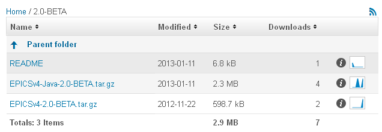

This document describes how to start to develop software using the EPICS V4 toolkit. It's a step by step guide to downloading the appropriate EPICS V4 products and associated software, and to using them to create programs. Presently, the document concentrates on developing middleware EPICS data services, in Java, and on interfacing to EPICS V3 control data, in C++. Programming illustrations are included.
This is the 18-Jan-2013 version of the Getting Started with EPICS V4. This version adds examples of C++ services. This version is up to date with respect to the BETA 1.0 release, including the 1.0.1-BETA Java tar file, and also with development from the Mercurial tips.
The next version should include: section after step-by-step like "going further" which points to existing documentation of the EPICS V4 core modules.
EPICS V4 is implemented in C++ and Java. Its APIs are in C++ and Java mainly, though wrappers are being produced for Python and Matlab. However, this document covers only development in Java and C++.
See also the Troubleshooting EPICS V4 cheatsheet, which lists very first steps in finding and resolving problems with EPICS V4 connections.
EPICS V4 is comprised of 3 "core" modules: pvIOC, pvData, and pvAccess. You need all 3. The specifications for the function of these are (or are presently being) defined as normative documents of the EPICS V4 working group, and available from the homepage the EPICS V4 homepage. There are Java and C++ implementations of each of these 3. The source code of each can be acquired from Mercurial. To use them, you can download and build them from the source, as described below. For java, you may alternatively just download the Jars. This document deals with acquiring and using these 3 core modules. However, there are many more pieces of software in the EPICS V4 "ecosphere", please see the homepage, and the EPICS V4 Mercurial web site.
Also, the levels of maturity and completeness of the core modules, is different with respect to their C++ and Java implementations. That will be important when you go further than this Getting Started guide.
| Module | SourceForge Hg repo for Java | Java jar file | SourceForge Hg repo for C++ |
|---|---|---|---|
| pvData | pvDataJava | pvData-1.0-SNAPSHOT.jar | pvDataCPP |
| pvAccess | pvAccessJava | pvAccess-1.0-SNAPSHOT.jar | pvAccessCPP |
| pvIOC | pvIOCJava | pvIOC-1.0-SNAPSHOT.jar | pvIOCCPP |
The dependency hierarchy between the above is the following: pvData is independent; pvAccess depends only on pvData; pvIOC depends on both of the above. Builds in which only one of these is built, must of course take this interdependency into account.
The version number and designation may change as versions are released. At the time BETA 1.0 release, these were pvData-1.0-BETA.jar etc.
Since the development cycle (compile, build, etc) is significantly different for each language, and to match suitable language API description to suitable use cases, this guide is contains 2 separate major sections below - one for Java development and one for C++ development.
To link EPICS V4 to EPICS V3 records two basic approaches are possible.
In the first, an an embedded pvAccess server inside a V3 IOC accesses records directly through the database allowing a V4 client to communicate with the V3 records through pvAccess. This is provided by V3Channel, currently part of pvIOCCPP, and implemented in C++.
Alternatively EPICS V4 can link to EPICS V3 records using Channel Access. This is currently available in Java and in this case two more files, jca*.jar and caj*.jar, are necessary. There are a number of modes of such interoperation. Firstly, an embedded Channel Access client inside the pvAccess server, allows the pvIOC to communicate with an EPICS V3 server, i.e. a pvIOC database can access records in a V3 IOC database. Secondly, the pvAccess client can be configured to use the Channel Access protocol of V3 when accessing V3 channels. Thirdly, the pvAccess server (part of pvAccess above) allows an existing EPICS V3 Channel Access client to access a pvIOC database. These interoperability functions require JCA and CAJ jcaandcaj. These are available from the EPICS V4 download site http://sourceforge.net/projects/epics-pvdata/files/ or from their reference sources.
When we say "EPICS V3" in general we mean EPICS 3.14.
This section is on software development, with and of, the Java implementation of EPICS V4. For C++ development, see below.
Since the minimum EPICS V4 runtime is composed of the 3 modules pvData, pvAccess and pvIOC, you will need at least these 3. The sections below will guide you through acquiring them from Jars or building from the source.
| Prerequisite | Reference site | jar file |
|---|---|---|
| jca | http://epics-jca.sourceforge.net/jca/ | jca-2.3.5.jar |
| caj | http://epics-jca.sourceforge.net/caj/ | caj-1.1.8.jar |
The Java implementation of the core EPICS V4 pv* modules, is made available in two ways. Firstly, you can download EPICS V4 as a tarball of the jar files and necessary XMLs, directly from the EPICS V4 sourceforge site. Alternatively, you can download the Java sources and build it yourself.
You would use the tar file mechanism of acquiring EPICS V4 if you only intend to use EPICS V4's Java implementation (not to contribute to development at all). If this conditions is false, you probably want to acquire EPICS V4 by the method of downloading the Mercurial source, and building with Maven. Each of these will be described below.
The simplest way to acquire EPICS V4's java implementation is to download the tar file of the jars and necessary XML files, from the EPICS V4 sourceforge download site, http://sourceforge.net/projects/epics-pvdata/files/ [downloadsite]. See in particular the README file at the site.
There are presently 5 jars files available. The 3 named pvIOC*.jar, pvAccess*.jar and pvData*.jar make up the core of EPICS V4. For each version release of EPICS V4, these 3 are bundled into a single tar.gz file for download. You'll need at least what's in the tar.gz. You may additionally want caj*.jar and jca*.jar if you want to attach to EPICS V3. NOTE: The versions of these may have changed since publication of this document, but that should not make a significant difference to these instructions.
To get off the ground using java download, see the examples in the epics-pvdata exampleJava Mercurial repo [ev4examples-java]. The setup files of those examples (helloWorld_setup.bash and rdb_setup.bash) are written assuming local .class files, you'll have to convert them so the CLASSPATH points to the jar files instead - as described below ). So far only examples of the "ChannelRPC" functionality of EPICS V4 are included in the exampleJava repo, but more will be added.
This section is a guide for acquiring and configuring the files in the Java tar.gz. For illustration we test successful execution of the helloWorld client/server example.
% tar xvfz EPICSv4-Java-1.0.1-BETA.tar.gzYou should see:
% cd EPICSv4-Java-1.0.1-BETA % ls total 3200 0 drwxr-xr-x 12 greg staff 408 8 Feb 11:08 ./ 0 drwxr-xr-x 4 greg staff 136 8 Feb 11:29 ../ 16 -rw-r--r-- 1 greg staff 5715 8 Feb 11:08 README 0 drwxr-xr-x 6 greg staff 204 8 Feb 11:08 common/ 0 drwxr-xr-x 10 greg staff 340 8 Feb 11:08 exampleJava/ 496 -rw-r--r-- 1 greg staff 251087 7 Feb 19:21 pvAccess-1.0.1-BETA.jar 392 -rw-r--r-- 1 greg staff 197533 7 Feb 17:46 pvData-1.0.1-BETA.jar 2056 -rw-r--r-- 1 greg staff 1049064 7 Feb 17:53 pvIOC-1.0.1-BETA.jar 0 drwxr-xr-x 5 greg staff 170 8 Feb 11:08 pvIOCJava/ 232 -rw-r--r-- 1 greg staff 114918 7 Feb 19:27 pvService-1.0.1-BETA.jar 0 drwxr-xr-x 3 greg staff 102 8 Feb 11:08 pvServiceJava/ 8 -rw-r--r-- 1 greg staff 11 8 Feb 11:08 tag.txt
export JAVAIOC=/Users/greg/Development/epicsV4/releasetest/EPICSv4-Java-1.0.1-BETA/pvIOCJava
source $HOME/Development/epicsV4/releasetest/EPICSv4-Java-1.0.1-BETA/common/source/pvCommon_setup.bash
WORKSPACE=$HOME/Development/epicsV4/releasetest/EPICSv4-Java-1.0.1-BETA
CLASSPATH=${EXAMPLES}/target/classes
CLASSPATH=${CLASSPATH}:${WORKSPACE}/pvData-1.0.1-BETA.jar
CLASSPATH=${CLASSPATH}:${WORKSPACE}/pvIOC-1.0.1-BETA.jar
CLASSPATH=${CLASSPATH}:${WORKSPACE}/pvAccess-1.0.1-BETA.jar
CLASSPATH=${CLASSPATH}:${WORKSPACE}/pvService-1.0.1-BETA.jar
cd to exampleJava/, then $ mvn compile or cd to exampleJava/, then $ source src/helloWorld/hellowWorld_setup.bash $ (mkdir target; cd target; mkdir classes) # since javac won't mkdir -d dir $ javac -sourcepath src src/helloWorld/*.java -d target/classesEither of these should result in class files in exampleJava/target/classes/*.class
cd to exampleJava/src/helloWorld/ % ./helloServerRunnerTip: If you get a ClassNotFound, you can diagnose your runtime environment's CLASSPATH by sourcing helloWorld_setup.bash and then running a command like
printenv CLASSPATH | tr : '\n' | xargs -I{} ls {}
cd to exampleJava/src/helloWorld/, then % ./helloClientRunner Stefania Hello Stefania
The use case of downloading the source using Mercurial (aka "hg"), and building with Maven, would be applicable if you are a Java developer and wish either to contribute to EPICS V4, or like to use a command line for your Java builds, or both.
All 3 of the normative EPICS V4 projects (pvData, pvIOC, pvAccess) are each in distinct mercurial repositories in the SourceForge project epics-pvdata. There are separate Mercurial repos for each of the C++ and Java implementations of each normative project [EPICSV4repos]. They can all be checked out via the Mercurial unix shell command hg, or using a Mercurial GUI client suitable for your platform.
The procedure defined below will help you download the source for the pv core modules above, plus the caj/jca jars, and build pv core jars.
You must have Maven and Mercurial clients installed. Mercurial, commonly "hg" on the command line comes for free with Mac OS (or MacHg for Mac OS X is a nice GUI). Mercurial must be able to download from the "epics-pvdata" sourceForge project. That means you either are going to use the HTTP URI syntax or the SSH URI syntax, as understood by Mercurial.
Download from the Mercurial repositories can be done anonymously (using the HTTP method), or using a sourceForge account (which uses the SSH method). The HTTP method may not work from your institution (see below) and if you're going to use the SSH mechanism, you will have to register with sourceForge.
Anonymous checkout (which uses the HTTP method - if it works for you) is via the URI below. Note that we have seen that some people get a "cannot connect" timeout using this method, while the identical command works for other people. It's probably related to the common practice of blocking port 8000 on the client side, which is done by many institutions for security reasons. Below is an example of how to check out the pvDataJava Mercurial repository, using the hg unix command via anonymous access:
% hg clone http://epics-pvdata.hg.sourceforge.net:8000/hgroot/epics-pvdata/pvDataJava
Alternatively use the ssh URI below for "non-annonymous" access. Permissions are presently set such that only epics-pvdata members can check out or push commits, so contact any one of the participants to get added first:
% hg clone ssh://<your-sourceforge-userid>@epics-pvdata.hg.sourceforge.net/hgroot/epics-pvdata/pvDataJava
See the Cheatsheet for Passwordless SSH Access to SourceForge for EPICS V4 Development if you'd like to set up your sourceforge account so that SSH operations can proceed without a password. Of course, for command line development as is described here, passwordless ssh authentication to sourceForge Mercurial is not necessary, it's just nice. But for Eclipse development it is important because of problems in Eclipse's Mercurial tools when they come to needing a password from the user.
Having installed mercurial (hg command) and decided on the URL scheme you're going to use (HTTP or SSH), now download the source. You'll create a local Mercurial "repository" for each EPICS V4 module you get. For references, see in particular [hg repo init].
First, create a root directory in which to house your repo directories, and hg init, Eg:
% pwd /Users/greg/Development/epicsV4/ % mkdir ev4hg % cd ev4hg % hg init <- this creates a .hg file in ev4hg
To download the source using Mercurial, use an "hg clone" executed while in the directory you created and in which you executed the "hg init", i.e. "ev4hg" in the example above. You will need at least the 4 core "normative" module Java implementations, as above. The "common" repo is useful too, for setup files etc:
[from ev4hg/ directory in this example, created above] % hg clone ssh://your_sourceforge_userid@epics-pvdata.hg.sourceforge.net/hgroot/epics-pvdata/pvDataJava % hg clone ssh://your_sourceforge_userid@epics-pvdata.hg.sourceforge.net/hgroot/epics-pvdata/pvAccessJava % hg clone ssh://your_sourceforge_userid@epics-pvdata.hg.sourceforge.net/hgroot/epics-pvdata/pvIOCJava % hg clone ssh://your_sourceforge_userid@epics-pvdata.hg.sourceforge.net/hgroot/epics-pvdata/pvServiceJava % hg clone ssh://your_sourceforge_userid@epics-pvdata.hg.sourceforge.net/hgroot/epics-pvdata/common
After each of these, you should see 9 or 10 lines, ending in a line like the following:
"842 files updated, 0 files merged, 0 files removed, 0 files unresolved"
In addition to the EPICS V4 core, you may want the Java examples, or "alpha" level software.
% hg clone ssh://your_sourceforge_userid@epics-pvdata.hg.sourceforge.net/hgroot/epics-pvdata/exampleJava % hg clone ssh://your_sourceforge_userid@epics-pvdata.hg.sourceforge.net/hgroot/epics-pvdata/alpha
The build dependencies of the EPICS v4 core modules are:
CAJ and JCA's jars will be downloaded by maven during your build below; no need to get them manually, as long as maven can see SourceForge's web site during the build.
When building you will see warnings, but should not see any errors if the build is successful. Warnings come from both source compiles and many from javadoc compiles. At the end of each "mvn compile install" process, you should see:
[INFO] ------------------------------------------------------------------------ [INFO] BUILD SUCCESS [INFO] ------------------------------------------------------------------------
The build itself is handled by Maven for Java builds. The actions for the build of each EPICS V4 module is handled by its own pom.xml file, there is no global one. So, the build process involves "cd" ing to the cloned repository (as they're called in mercurial speak) of each one of the 3 core modules, and issuing "mvn compile install" in each one. Start with pvDataJava since it has no dependencies, then pvAccessJava, then pvIOCJava.
If this is really the first maven build you've done, the first mvn compile line below will result in 2 things; Firstly, it will create your local "m2 repo" (in ~/.m2 by default). Then it will initiate many downloads from sourceForge, plus from Maven and prerequisites of Maven. But if you chose this path to EPICS v4, you probably knew that.]
% pwd /Users/greg/Development/epicsV4/ev4hg % cd pvDataJava % mvn compile install % cd ../pvAccessJava % mvn compile install -Dmaven.test.skip=true % cd ../pvIOCJava % mvn compile install -DJAVAIOC=$PWD -Dmaven.test.skip=true % cd ../pvServiceJava % mvn compile install
The above 4 complete the build of the EPICS v4 core. To compile and install EPICS v4 examples as well, if you cloned examplesJava above, then build it with the following:
cd to your exampleJava, probably cd ../examplesJava
% mvn compile install
The outcome of these builds is that you should see all of the build products in your local Maven repository (~/.m2 by default).
The minimum EPICS V4 runtime is composed of only 3 Jars, for the core, plus
2 if you want to access EPICS V3 IOCs, so you can
check the outcome of the builds with the find command below, to verify that from the 100s now
in ~/.m2/, you have the few you really need. Again, actual
version tags, i.e. "1.0-SNAPSHOT" in the example below, will vary as EPICS V4 matures:
% find ~/.m2 -name "pv*SNAPSHOT.jar" -o -name "*caj*.jar" -o -name "*jca*.jar" /Users/greg/.m2/repository/epics/caj/1.1.8/caj-1.1.8.jar /Users/greg/.m2/repository/epics/jca/2.3.5/jca-2.3.5.jar /Users/greg/.m2/repository/epics/pvAccess/1.0-SNAPSHOT/pvAccess-1.0-SNAPSHOT.jar /Users/greg/.m2/repository/epics/pvData/1.0-SNAPSHOT/pvData-1.0-SNAPSHOT.jar /Users/greg/.m2/repository/epics/pvIOC/1.0-SNAPSHOT/pvIOC-1.0-SNAPSHOT.jar /Users/greg/.m2/repository/epics/pvService/1.0-SNAPSHOT/pvService-1.0-SNAPSHOT.jar
Note that the results gave you not only jar files under ~/.m2/, but the sources and
javadoc jars too (in the Maven standard naming).
The above completes the build of EPICS V4 locally. To use it, you would write code that compiles and executes against the jar files above.
To use or develop these, the steps might be:
For Java client and server examples, at the time of writing, see the source code in the examplesJava module. You can find this on the epics-pvdata web site [ev4examples-java]. At the time of writing, examplesJava contains 2 examples, both of RPC style servers (that is, pass arguments to EPICS V4 server, get data back dependent on the arguments).
channelRPC functionality of EPICSV4 This section is on software development, with and of, the C++ implementation of EPICS V4. For Java development, see above.
This section guides you through the process of acquiring the source, building, and running an EPICS V3 IOC with a pvAccess server included. That is, you can use EPICS V4 client tools to access the PVs.
The example EPICS V4 IOC included in the EPICS V4 download includes a number of channels of different types: scalar/array/enum/calc etc, and data types: byte/short/longout/float for scalars, CHAR/SHORT/LONG/FLOAT/DOUBLE for arrays, plus string arrays. A channel list is attached below. You can load your own channels by adding db or template/substitution files and modifying the startup commands accordingly in your st.cmd file.
The C++ implementations of the EPICS V4 core modules, pvDataCPP, pvAccessCPP,
pvIOCCPP, use the EPICS V3 build system, based on unix make
(in contrast to the Java implementation, which
uses Maven). A basic understanding of the EPICS V3 make system is helpful,
although the following instructions do not assume this knowledge.
You will need the Mercurial client tools, as described above.
You will also need an installed version of EPICS V3, >= 3.14.12. See Appendix A for an example of building a local EPICS base, 3.14.12.2. For specific help for building on a Mac, see also Appendix B: Help with Mac OS X build.
Decide where you want to place your code. If you have not already done so create the Mercurial repo home directory there. Go to that directory and check out the 3 core EPICS V4 modules source code with a Mercurial clone [again this example shows using the SSH URL in this example, you may use an HTTP URL instead, see Java example above for more]:
[from ev4hg/ directory in this example, created above] % hg clone ssh://<your-sourceforge-userid>@epics-pvdata.hg.sourceforge.net/hgroot/epics-pvdata/pvDataCPP % hg clone ssh://<your-sourceforge-userid>@epics-pvdata.hg.sourceforge.net/hgroot/epics-pvdata/pvAccessCPP % hg clone ssh://<your-sourceforge-userid>@epics-pvdata.hg.sourceforge.net/hgroot/epics-pvdata/pvIOCCPP
The 3 core EPICS V4 modules have build interdependencies as detailed above. These interdependencies require that they are built in the following order: first pvDataCPP, pvAccessCPP, and finally pvIOCCPP, as detailed below.
Build pvData. cd pvDataCPP, and create a configure/RELEASE.local file. That file is included from configure/RELEASE with the line -include $(TOP)/configure/RELEASE.local.) In RELEASE.local set EPICS_BASE to point to your EPICS release:
% cd configure/
% cat > RELEASE.local
EPICS_BASE=${HOME}/Development/epicsV3/base-3.14.12.2
<CTRL-D>
%
If you downloaded the tarball from the Sourceforge page instead of cloning from Mercurial, you can use the RELEASE.local.example in the root directory, but drop the PVACCESS and PVDATA definitions in that file. They will create conflicts and the build will fail.
Be sure that you have at least the release 3.14.12. Trying to build with an earlier one is basically a waste of time.
You may also need to edit the CONFIG_SITE file to include a line that defines CROSS_COMPILER_TARGET_ARCHS to be an empty string, if you have
troubles building it for other than the host architecture. At the time of writing,
building for vxWorks is being developed.
[from the top level directory of pvDataCPP, issue make] % make
pvData should then build without errors. You get a heap of warnings but they can be ignored.
cd pvAccessCPP, and create the
pvAccess/configure/RELEASE.local file.
Add the locations of EPICS_BASE and PVDATA appropriately. Edit CONFIG_SITE if
needed. For example, copying the RELEASE.local we made for pvData to the pvAccessCPP
configure/ directory, and adding the
definition of PVDATA:
% cd ../pvAccessCPP/configure/
% cp ../../pvDataCPP/configure/RELEASE.local .
% cat >> RELEASE.local
PVDATA=${HOME}/Development/epicsV4/ev4hg/pvDataCPP
<CTRL-D>
% cd ..
% make
It should build without errors. Again with the warnings! [yea, this must be fixed]
cd pvIOCCPP, and add the
configure/RELEASE.local file.
Add the locations of EPICS_BASE, PVACCESS and PVDATA appropriately. Edit CONFIG_SITE
if needed. For example, again copying the RELEASE.local from pvAccessCPP we made
above, concatenating PVACCESS definition to it; and finally running make:
% cd ../pvIOCCPP/configure/
% cp ../../pvAccessCPP/configure/RELEASE.local .
% cat >> RELEASE.local
PVACCESS=${HOME}/Development/epicsV4/ev4hg/pvAccessCPP
<CTRL-D>
% cat RELEASE.local
EPICS_BASE=${HOME}/Development/epicsV3/base-3.14.12.2
PVDATA=${HOME}/Development/epicsV4/ev4hg/pvDataCPP
PVACCESS=${HOME}/Development/epicsV4/ev4hg/pvAccessCPP
% cd ..
% make
It should build without errors. Outstanding!
This completes the C++ build of EPICS V4.
For C++ client and server examples see the source code in the examplesCPP module. You can find this on the epics-pvdata web site [ev4examples-cpp]. At the time of writing, like the Java examples, it contains 2 examples of RPC-style servers.
channelRPC functionality of EPICSV4 This section describes how to use the C++ implementation of EPICS V4 to access EPICS V3 PVs. That is, a version 3 IOC makes the values of V3 channels available through pvAccess to EPICS V4 pvAccess clients.
To deploy an IOC with pvAccess support:envPaths. This file contains a number of epicsEnvSet commands
to set the correct paths. For example, For Linux it might be like the following. For
the Mac OS example consistent with the build examples above, see Help with Mac OS X build:
epicsEnvSet("ARCH","linux-x86")
epicsEnvSet("IOC","testV3Channel")
epicsEnvSet("TOP","/home/example/epics4/pvIOCCPP")
epicsEnvSet("EPICS_BASE","/usr/local/epics/base-3.14.12")
epicsEnvSet("PVDATA","$(TOP)/../pvDataCPP")
epicsEnvSet("PVACCESS","$(TOP)/../pvAccessCPP")
% ../../bin/<arch>/example st.cmd("arch" refers to the architecture for which you have built, e.g. linux-x86)
pvIOCCPP/db. You can add db files, templates etc. there.
Edit the st.cmd to make it load your EPICS databases.
sample output from my test to run the IOC.
bash-3.2$ ../../bin/linux-x86/example st.cmd
< envPaths
epicsEnvSet("ARCH","linux-x86")
epicsEnvSet("IOC","testV3Channel")
epicsEnvSet("TOP","/home/scratch/korhonen/EPICSv4/testbuild/pvIOCCPP")
epicsEnvSet("EPICS_BASE","/usr/local/epics/base-3.14.12")
epicsEnvSet("PVDATA","/home/scratch/korhonen/EPICSv4/testbuild/pvDataCPP")
epicsEnvSet("PVACCESS","/home/scratch/korhonen/EPICSv4/testbuild/pvAccessCPP")
cd /home/scratch/korhonen/EPICSv4/testbuild/pvIOCCPP
## Register all support components
dbLoadDatabase("dbd/example.dbd")
example_registerRecordDeviceDriver(pdbbase)
## Load record instances
dbLoadRecords("db/dbScalar.db","name=byte01,type=byte")
dbLoadRecords("db/dbScalar.db","name=short01,type=short")
dbLoadRecords("db/dbScalar.db","name=int01,type=longout")
Record "int01" does not have a field "PREC"
Error at or before ")" in file "db/dbScalar.db" line 3
Can't set "int01.DRVH" to "9.9"
Error at or before ")" in file "db/dbScalar.db" line 7
Can't set "int01.DRVL" to "-0.1"
Error at or before ")" in file "db/dbScalar.db" line 8
dbLoadRecords("db/dbScalar.db","name=float01,type=float")
dbLoadRecords("db/dbScalar.db","name=double01,type=ao")
dbLoadRecords("db/dbArray.db","name=byteArray01,type=CHAR")
dbLoadRecords("db/dbArray.db","name=shortArray01,type=SHORT")
dbLoadRecords("db/dbArray.db","name=intArray01,type=LONG")
dbLoadRecords("db/dbArray.db","name=floatArray01,type=FLOAT")
dbLoadRecords("db/dbArray.db","name=doubleArray01,type=DOUBLE")
dbLoadRecords("db/dbString.db","name=string01")
dbLoadRecords("db/dbStringArray.db","name=stringArray01")
dbLoadRecords("db/dbEnum.db","name=enum01")
dbLoadRecords("db/dbCounter.db","name=counter01");
dbLoadRecords("db/dbScalar.db","name=byte02,type=byte")
dbLoadRecords("db/dbScalar.db","name=short02,type=short")
dbLoadRecords("db/dbScalar.db","name=int02,type=longout")
Record "int02" does not have a field "PREC"
Error at or before ")" in file "db/dbScalar.db" line 3
Can't set "int02.DRVH" to "9.9"
Error at or before ")" in file "db/dbScalar.db" line 7
Can't set "int02.DRVL" to "-0.1"
Error at or before ")" in file "db/dbScalar.db" line 8
dbLoadRecords("db/dbScalar.db","name=float02,type=float")
dbLoadRecords("db/dbScalar.db","name=double02,type=ao")
dbLoadRecords("db/dbArray.db","name=byteArray02,type=CHAR")
dbLoadRecords("db/dbArray.db","name=shortArray02,type=SHORT")
dbLoadRecords("db/dbArray.db","name=intArray02,type=LONG")
dbLoadRecords("db/dbArray.db","name=floatArray02,type=FLOAT")
dbLoadRecords("db/dbArray.db","name=doubleArray02,type=DOUBLE")
dbLoadRecords("db/dbString.db","name=string02")
dbLoadRecords("db/dbStringArray.db","name=stringArray02")
dbLoadRecords("db/dbEnum.db","name=enum02")
dbLoadRecords("db/dbCounter.db","name=counter02");
dbLoadRecords("db/dbScalar.db","name=byte03,type=byte")
dbLoadRecords("db/dbScalar.db","name=short03,type=short")
dbLoadRecords("db/dbScalar.db","name=int03,type=longout")
Record "int03" does not have a field "PREC"
Error at or before ")" in file "db/dbScalar.db" line 3
Can't set "int03.DRVH" to "9.9"
Error at or before ")" in file "db/dbScalar.db" line 7
Can't set "int03.DRVL" to "-0.1"
Error at or before ")" in file "db/dbScalar.db" line 8
dbLoadRecords("db/dbScalar.db","name=float03,type=float")
dbLoadRecords("db/dbScalar.db","name=double03,type=ao")
dbLoadRecords("db/dbArray.db","name=byteArray03,type=CHAR")
dbLoadRecords("db/dbArray.db","name=shortArray03,type=SHORT")
dbLoadRecords("db/dbArray.db","name=intArray03,type=LONG")
dbLoadRecords("db/dbArray.db","name=floatArray03,type=FLOAT")
dbLoadRecords("db/dbArray.db","name=doubleArray03,type=DOUBLE")
dbLoadRecords("db/dbString.db","name=string03")
dbLoadRecords("db/dbStringArray.db","name=stringArray03")
dbLoadRecords("db/dbEnum.db","name=enum03")
dbLoadRecords("db/dbCounter.db","name=counter03");
cd /home/scratch/korhonen/EPICSv4/testbuild/pvIOCCPP/iocBoot/testV3Channel
iocInit()
Starting iocInit
############################################################################
## EPICS R3.14.12.1 $Date: 2011/05/18 14:43:13 $
## EPICS Base built Oct 18 2011
############################################################################
iocRun: All initialization complete
epicsThreadSleep(1.0)
startV3Channel
epicsThreadSleep(1.0)
VERSION : CA Server v0.9.0
PROVIDER_NAMES : v3Channel
BEACON_ADDR_LIST :
AUTO_BEACON_ADDR_LIST : 1
BEACON_PERIOD : 15
BROADCAST_PORT : 5067
SERVER_PORT : 5066
RCV_BUFFER_SIZE : 16384
IGNORE_ADDR_LIST:
STATE : INITIALIZED
startExampleChannel exampleChannel
startPVServiceChannel
2011-11-11T16:29:56.715 Using dynamically assigned TCP port 39949.
VERSION : CA Server v0.9.0
PROVIDER_NAMES : pvService
BEACON_ADDR_LIST :
AUTO_BEACON_ADDR_LIST : 1
BEACON_PERIOD : 15
BROADCAST_PORT : 5067
SERVER_PORT : 39949
RCV_BUFFER_SIZE : 16384
IGNORE_ADDR_LIST:
STATE : INITIALIZED
epics>
The "out of the box" record list:
epics> dbl double01 double02 double03 counter01 counter02 counter03 int01 int02 int03 enum01 enum02 enum03 string01 string02 string03 byteArray01 byteArray02 byteArray03 doubleArray01 doubleArray02 doubleArray03 floatArray01 floatArray02 floatArray03 intArray01 intArray02 intArray03 shortArray01 shortArray02 shortArray03 stringArray01 stringArray02 stringArray03 byte01 byte02 byte03 short01 short02 short03 float01 float02 float03 epics>Note: the errors in the above output like
Record "int03" does not have a field "PREC"are due to the way the example records are loaded. They can be safely ignored in this case.
About the directory structures
pvData: bin/<arch> - regression test programs for pvData configure - configuration for build, as in EPICS v3 base. lib - libraries (libpvData) for other components to use include - header files (obviously) documentation - pvData documentation (html) pvDataApp - source code testApp - regression test code. test - scripts that execute the regression tests.
pvAccessCPP bin - example programs and regression tests for pvAccess configure - configuration for build, as in EPICS v3 base. lib - libraries (libpvAccess) for other components to use include - header files documentation - pvAccess documentation (html) pvAccessApp - source code of pvAccess testApp - regression test code scripts - scripts that execute the regression tests.
pvIOCCPP bin - binary for the example IOC configure - configuration for build, as in EPICS v3 base. db - EPICS database (template) files dbd - EPICS V3 dbd (database definition) files. documentation - pvIOC documentation (html) include - header files iocBoot - boot directories for the example IOC(s) lib - libraries (libpvIOC etc.) pvIOCApp - pvIOC source code testApp - sample code for a test IOC and RPC service
[TODO: Are the QtC-xxx files somehow usable (with Qt Creator or similar) or is this just leftovers from a try?
An example of downloading and building EPICS V3 version 3.14.12, on Mac OS X, is given below. An EPICS V3 base install is a prerequisite for compilation of the C++ implementations of the EPICS V4 core modules.
Begin by downloading the tar file of the EPICS V3 base from the EPICS main web site at Argonne: http://www.aps.anl.gov/epics/base/R3-14/12.php. In this example, having downloaded the tar, it is moved into the directory where EPICS V3 base is to be built. Then it is built.
% mkdir epicsV3
% cd epicsV3
% mv ~/Downloads/baseR3.14.12.2.tar .
% tar xvf baseR3.14.12.2.tar
% cd base-3.14.12.2/
% make
See below for help with Mac build in Mac OS 10.8 (Mountain Lion) is you have issues with make, compiling or linking.
The EPICS base build ran perfectly on the author's Mac running Mac OS X 10.7.3. However, for Mac OS 10.8 (Mountain Lion), there were 2 issues. Firstly, it seems make is no longer distributed and installed by default in 10.8. One can however choose to install the Mac OS command line tools, see this comment on Stackoverflow.com for help.
Additionally, there seem to be a change in the compiler support of Mac OS 10.8, causing an error such as the following at link time:
ld: library not found for -lgcc
Try adding the line following line to your configure/os/CONFIG_SITE.Common.darwin-x86 file [Thanks to Andrew Johnson for this help]:
GNU = NOor this line if that doesn't work:
GNU_LDLIBS_YES =
Following the builds of pvDataCPP, pvAccessCPP and pvIOCCPP detailed above, the envPaths file used to run the V3 Channel test example, pvIOCCPP/iocBoot/testV3Channel, was as follows:
% cat envPaths
epicsEnvSet("ARCH","darwin-x86")
epicsEnvSet("IOC","testV3Channel")
epicsEnvSet("TOP","/Users/greg/Development/epicsV4/ev4hg/pvIOCCPP")
epicsEnvSet("EPICS_BASE","/Users/greg/Development/epicsV3/base-3.14.12.2")
epicsEnvSet("PVDATA","$(TOP)/../pvDataCPP")
epicsEnvSet("PVACCESS","$(TOP)/../pvAccessCPP")